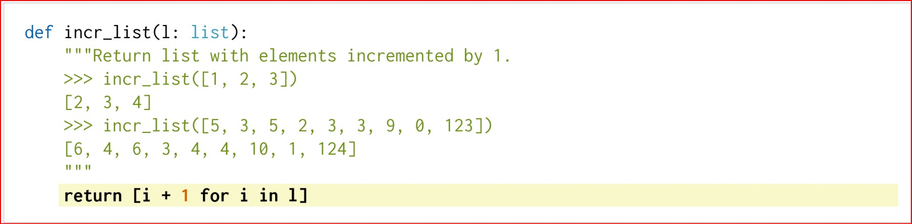

Large Language Models for Code are flourishing. New and powerful models are released on a weekly basis, demonstrating remarkable performance on the code generation task. In this article, I curate some SOTA models and try to figure out their machanism. Here is the content of table:
Contents
Datasets
HumanEval
Models
CodeLlama
Phind
CodeGeex
Codeium
WizardCode
phi-1
CodeFuse
HumanEval
This is an evaluation harness for the HumanEval problem solving dataset described in the paper “Evaluating Large Language Models Trained on Code”. It used to measure functional correctness for synthesizing programs from docstrings. It consists of 164 original programming problems, assessing language comprehension, algorithms, and simple mathematics, with some comparable to simple software interview questions. At the same time, you can find the latest models and advancements in PapersWithCode.

An example: the white space is the prompt or input while the yellow space is the model-generated content
CodeLlama
Maybe you haven’t excperienced CodeLlama yet, the Huggingface official group has deployed a playground for everyone where you can Preliminarily evaluate it in your target task.
After you have seen its performance on your task and gain much confidence in CodeLlama, you might want to give it a shot where you can delve deeper into the paper, even deploy and finetune it. The model weights are available in Huggingface. If you go through the paper, you might find a really distinct model named “unnatural CodeLlama” whose performance is nearly the same as GPT-4 under the code scenario.
What is unnatural instruction
In December 2022, Meta AI with Tel Aviv University published the paper named Unnatural Instructions: Tuning Language Models with (Almost) No Human Labor. The paper talks about how Meta created a large dataset of creative and diverse instructions and collected 64,000 examples by prompting a language model. This was then further prompted to create a total of 240,000 examples on inputs and outputs, which contained only a little amount of noise. Unnatural Instructions is a dataset of instructions automatically generated by a Large Language model.
{
'instruction': 'You will be given a series of words. Output these words in reverse order, with each word on its own line.',
'instances':
[{
'instruction_with_input': "You will be given a series of words. Output these words in reverse order, with each word on its own line.\nWords: ['Hello', 'world'].",
'input': "Words: ['Hello', 'world'].",
'constraints': 'None.',
'output': 'world\nHello'
}]
}
Code Large Language Models (Code LLMs), such as StarCoder, have demonstrated exceptional performance in code-related tasks. However, most existing models are solely pre-trained on extensive raw code data without instruction fine-tuning. In this paper, we introduce WizardCoder, which empowers Code LLMs with complex instruction fine-tuning, by adapting the Evol-Instruct method to the domain of code. Through comprehensive experiments on four prominent code generation benchmarks, namely HumanEval, HumanEval+, MBPP, and DS-1000, we unveil the exceptional capabilities of our model. It surpasses all other open-source Code LLMs by a substantial margin. Moreover, our model even outperforms the largest closed LLMs, Anthropic’s Claude and Google’s Bard, on HumanEval and HumanEval+.
phi-1
phi-1 is proposed by teams of Microsoft in the "Textbooks Are All You Need". phi-1 is a Transformer-based model with 1.3B parameters, trained for 4 days on 8 A100s, using a selection of “textbook quality” data from the web (6B tokens) and synthetically generated textbooks and exercises with GPT-3.5 (1B tokens). Despite this small scale, phi-1 attains pass@1 accuracy 50.6% on HumanEval and 55.5% on MBPP. It also displays surprising emergent properties compared to phi-1-base, our model before our finetuning stage on a dataset of coding exercises, and phi-1-small, a smaller model with 350M parameters trained with the same pipeline as phi-1 that still achieves 45% on HumanEval.
Phind
Phind is an intelligent search engine and assistant for programmers. With Phind, you’ll get the answer you’re looking for in seconds instead of hours. It will guide you step-by-step from that idea in your head to a working app. Phind is smart enough to proactively ask you questions to clarify its assumptions and to browse the web (or your codebase) when it needs additional context. With their new VS Code extension, you can now get Phind’s help right in your editor.
August 28th Update: They’ve trained a new model, Phind-CodeLlama-34B-v2, that achieves 73.8% pass@1 on HumanEval. See the blog.
They have released all models on Huggingface to bolster the open-source community.
Vscode Plugin with LLMs
We have mentioned above that most of the models are incorporated into the plugin for the convenience in coding procedure. In order to find out the mechanism, we take CodeGeex as an example. First we install the CodeGeex plugin and log in, then we can use developer tool (ctl+shift+I) to ananlyze the network and console output.
We further go to the directory '~/.vscode/aminer.codegeex-2.1.3' where exists the source code of the plugin and find the post method in line42-64 of '~/.vscode/extensions/aminer.codegeex-2.1.3/out/utils/getCodeCompletions.js'. Besides, with seamless effort we can obtain the api url: 'https://tianqi.aminer.cn/api/v2/multilingual_code_generate_adapt', which you can try with any frontend tools. So far we can get preliminary thought about the mechanism: Frontend + Api calling, so the keys of user experience are still the 'clever' model and network.
Conclusion
In the conclusion, I will display the performance of these models on HumanEval dataset so that we can clearly and conveniently see their gap in code generation task. Therefore we can choose the right base model for our further research and production.
Table 1: Comparable results on code generation task